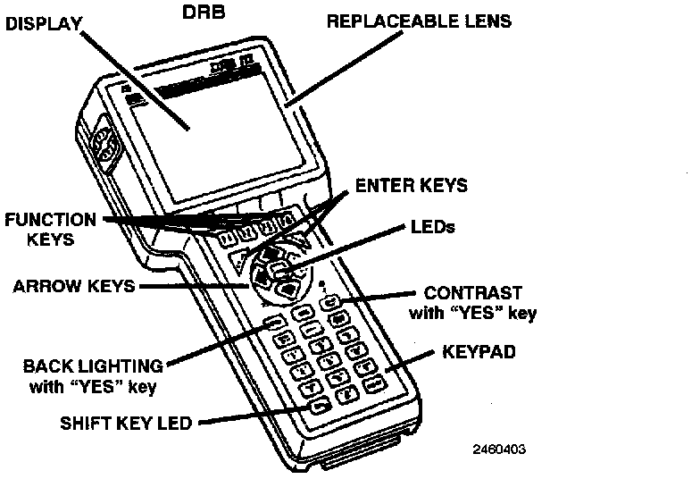

Air Bag Systems: Tools and Equipment

DRBIII ERROR MESSAGES AND BLANK SCREEN
Under normal operation, the DRB will display one of only two error messages:
- User-Requested WARM Boot or User-Requested COLD Boot
If the DRB should display any other error message, record the entire display and call the MDS Hotline, or call for information and assistance at 1-800-825-8737. This is a sample of such an error message display:
ver: 2.14
date: 26 Jul93
file: key_itf.cc
date: Jul 26 1993
line: 548
err. Ox1
User-Requested COLD boot
Press MORE to switch between this display and the application screen.Press F4 when done noting information.
DRBIII DOES NOT POWER UP
If the LED's do not light or no sound is emitted at start up, check for loose cable connections or a bad cable. Check the vehicle battery voltage (data link connector cavity 16). A minimum of 11 volts is required to adequately power the DRB.
If all connections are proper between the DRB and the vehicle or other devices, and the vehicle battery is fully charged, an inoperative DRB may be the result of faulty cable or vehicle wiring.
PERFORM VEHICLE COMMUNICATION TEST 1A.
DISPLAY NOT VISIBLE
Low temperatures will affect the visibility of the display. Adjust the contrast to compensate for this condition.